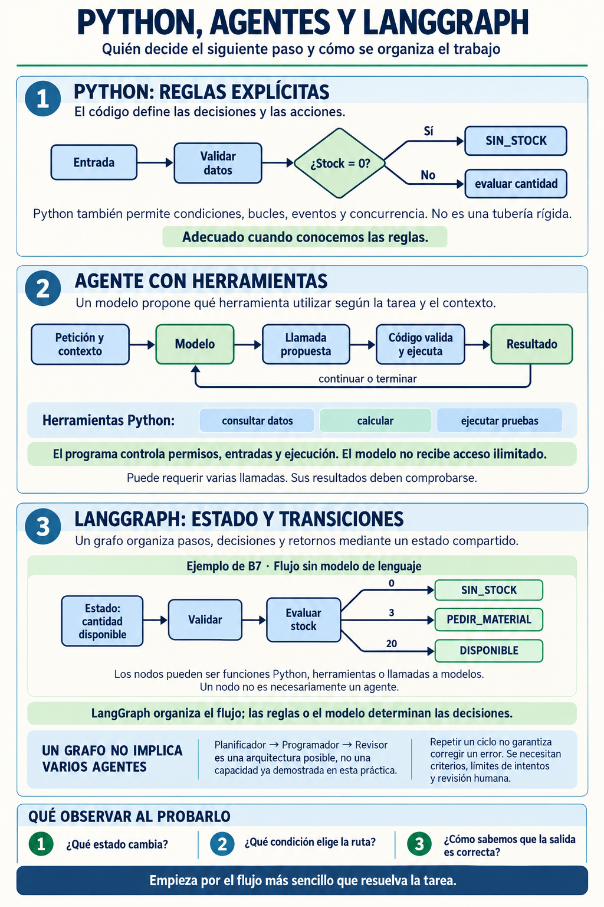

EXP-05 · LangGraph · Sin LLM · Sin red
Grafo de flujo: Python orquesta
Objetivo: representar y ejecutar un flujo pequeño con estado, nodos y rutas. LangGraph organiza los pasos; Python decide el flujo. Al terminar podrás explicar qué aporta el grafo y cuándo basta una secuencia normal de Python.
estado → nodo → condición → ruta A / ruta B → resultado observablePython, agentes y LangGraph


Resumen accesible: la imagen presenta tres ideas relacionadas. Python puede expresar reglas explícitas; un agente puede proponer el uso de herramientas bajo control del programa; y LangGraph puede organizar un estado, nodos y transiciones. En este proyecto de B7 el grafo funciona sin modelo de lenguaje: Python decide la ruta y LangGraph organiza la ejecución. Un nodo es una función o paso del flujo, no necesariamente un agente. Los valores 0, 3 y 20 son ejemplos de entrada de la infografía, no una lista completa de las condiciones de transición. Este proyecto no implementa un sistema multiagente ni autocorrección.
PREPARAR
El ZIP es plano: crea o elige una carpeta vacía, por ejemplo mi-grafo-b7/, y descomprímelo directamente dentro. Abre esa carpeta en VS Code y, desde VS Code, abre una terminal situada en esa carpeta. Solo hay 5 archivos:
mi-grafo-b7/
├── flujo_taller.py # estado -> nodos -> condición -> ruta -> resultado
├── datos_demo.json # contexto local (pieza, stock, mínimo)
├── test_flujo_taller.py # pruebas con unittest (librería estándar)
├── requirements.txt # dependencias del proyecto
└── README.md # guía del proyectoPrepara un entorno virtual antes de ejecutar el grafo. .venv mantiene las dependencias de este proyecto separadas de las de otros proyectos.
Windows PowerShell
py -m venv .venv
.\.venv\Scripts\Activate.ps1
python -m pip install -r requirements.txtmacOS/Linux
python3 -m venv .venv
source .venv/bin/activate
python -m pip install -r requirements.txtSi .venv ya existe, basta con activarlo o utilizar su intérprete. Si PowerShell bloquea la activación, no cambies la política de ejecución del sistema: instala y ejecuta directamente con:
.\.venv\Scripts\python.exe -m pip install -r requirements.txt
.\.venv\Scripts\python.exe flujo_taller.py --demoVER — qué es cada cosa
Lee flujo_taller.py y localiza las 4 piezas (nada de teoría larga):
# ESTADO: el diccionario que viaja por el grafo
# (pieza, stock, stock_minimo, decision, ruta, ...)
# NODO: cada función que hace una tarea
# (obtener_contexto, validar_datos, evaluar_estado, ...)
# CONDICIÓN: decidir_siguiente(stock, minimo) elige la ruta
# RUTAS: sin_stock / pedir_material / disponibleEjecuta y observa la ruta que toma con los datos de demostración:
python flujo_taller.py --demoDeberías ver pedir_material y la decisión PEDIR_MATERIAL. Explica en una frase por qué se tomó esa ruta (pista: stock 3 frente a mínimo 5).
SEGUIR EL FLUJO REAL
El diccionario de estado lleva pieza, stock, stock_minimo, ruta y decision. Los nodos obtener_contexto, validar_datos y evaluar_estado lo van actualizando. La condición decidir_siguiente(stock, minimo) selecciona:
stock es None o stock <= 0 → sin_stock
stock < minimo → pedir_material
stock >= minimo → disponibleLangGraph conecta esos nodos con START, END y aristas condicionales. No inventa la decisión ni consulta un modelo: la regla está escrita en Python y el resultado observable es la ruta y su etiqueta.
¿LANGGRAPH O PYTHON NORMAL?
Para este flujo corto, Python normal basta: una secuencia de llamadas y un if resuelven la misma necesidad con menos instalación y mantenimiento. LangGraph aporta una representación explícita cuando crecen los nodos, las transiciones o la necesidad de inspeccionar el estado; aquí se usa solo para ver esa organización, no porque sea imprescindible.
Este ejemplo es un grafo determinista: no usa LLM, claves, Ollama, red ni servicios externos. Una ampliación con IA añadiría un modelo dentro de un nodo y sus riesgos de coste, disponibilidad y validación. Un sistema multiagente requeriría varios agentes con responsabilidades y coordinación; este proyecto no lo implementa.
PROBAR — cambia los datos, la ruta cambia
Sin tocar código, comprueba que la condición manda:
python flujo_taller.py --demo --stock 0
python flujo_taller.py --demo --stock 20
python -m unittest -vAnota: ¿qué ruta sale con stock 0? ¿Y con stock 20? Las pruebas de la regla pura (decidir_siguiente) pasan siempre, sin langgraph. La prueba del grafo completo solo pasa si langgraph está instalado; si no, queda NO_VERIFICADO — que no es un fallo.
MODIFICAR — tú cambias la orquestación
Elige UNA de las dos (no las dos). Pide PLAN al agente si quieres, pero el cambio lo entiendes tú:
Opción A: cambia la condición en decidir_siguiente
(p. ej. pedir material también cuando stock == minimo).
Opción B: añade una ruta pequeña (p. ej. stock_alto cuando
stock >= 20, con su nodo y sus aristas).Tras tu cambio, verifica:
python flujo_taller.py --demo
python -m unittest -vSi añadiste una ruta, actualiza también las pruebas de la regla pura. Si rompiste algo, el traceback te dice qué nodo falló: léelo de abajo arriba, como en B6.
MINI-RETO (autonomía)
Sin pasos detallados: cambia datos_demo.json para forzar cada una de las 3 rutas y anota la salida GRAFO → RESULTADO de cada caso. No toques el grafo para esto.
RESULTADO OBSERVABLE
Demuestras el concepto central en tu terminal:
FUENTE DE DATOS: DATOS DE DEMOSTRACION
CONTEXTO RECIBIDO
Pieza: Broca 5mm / Stock: 3 / Minimo: 5
GRAFO
obtener_contexto -> validar_datos -> evaluar_estado -> pedir_material
RESULTADO
PEDIR_MATERIALY explicas: qué es el estado · qué hace cada nodo · por qué se tomó esa ruta · qué salida se obtiene · qué cambiaste tú y qué resultado nuevo comprobaste. Sin LLM en ningún punto: la decisión es 100% Python.
COMPROBAR
python flujo_taller.py --demo
python -m unittest -vChecklist de salida: ¿estado, nodos, condición y rutas identificados? ¿3 rutas probadas con datos? ¿1 modificación de orquestación hecha por ti? ¿pruebas en verde o NO_VERIFICADO justificado? ¿puedes explicar por qué se toma cada ruta?
PLAN B (sin red / si pip falla)
Sin langgraph instalado: la regla pura se sigue probando (decidir_siguiente y los nodos son Python estándar). Ejecuta python -m unittest -v: las pruebas puras quedarán en verde y la del grafo aparecerá como skipped (NO_VERIFICADO). Dibuja el grafo con sus 3 rutas y predice la salida de cada caso.
CONTINUAR
Frase de cierre: “LangGraph organiza los pasos, pero Python decide el flujo”. Siguiente: EXP-06 (una IA de verdad, bajo control determinista).